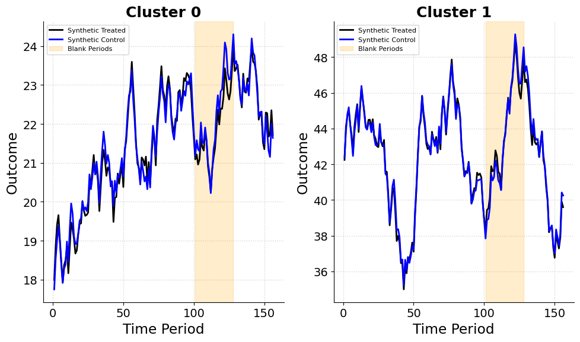
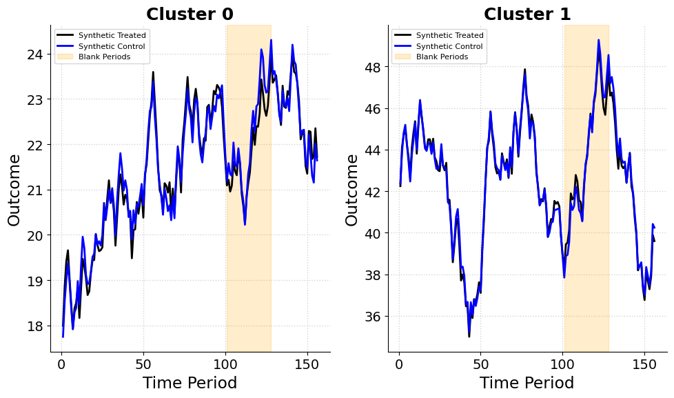
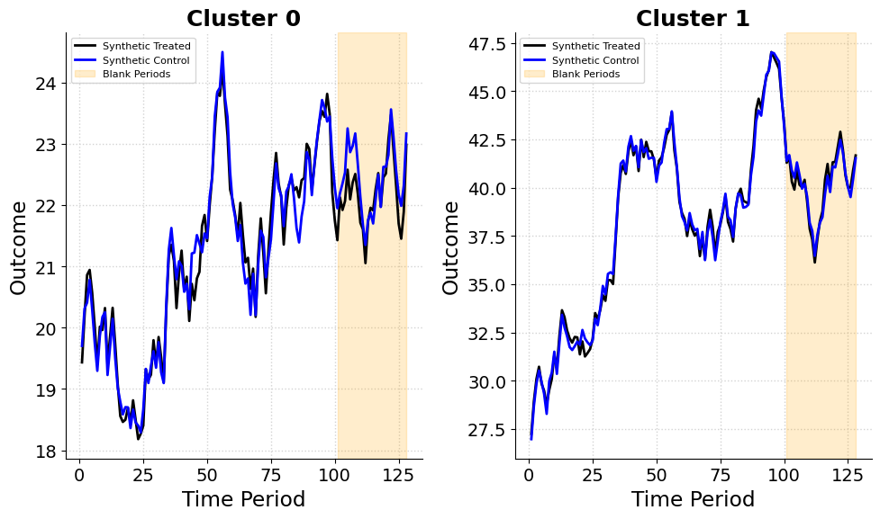

/opt/hostedtoolcache/Python/3.13.11/x64/lib/python3.13/site-packages/mlsynth/config_models.py:61: UserWarning:
DataFrame was not sorted by [town, time] — auto-sorting applied.

Jared Greathouse
September 20, 2025
Suppose the government of Curaçao wants to implement a new “Green Stay” initiative that encourages hotels to adopt sustainability measures, such as reducing water usage, improving waste management, and shifting toward renewable energy. Such initiatives are becoming increasingly popular in recent years. But evaluating whether these policies actually work presents a fundamental challenge for market researchers.
From a methodological standpoint, the ideal approach would be a randomized controlled trial (RCT), in which some hotels implement the policy while others serve as controls. Randomization ensures that treated and control groups are balanced in expectation, so that any differences in outcomes after implementation can be attributed to the policy. RCTs provide a clear framework for statistical inference and are widely regarded as the gold standard for impact evaluation.
In practice, however, conducting an RCT in this context is fraught with challenges. Ethically, randomly granting some hotels the benefits of the program while denying them to others may be perceived as unfair, particularly if the policy enhances reputation, attracts eco-conscious travelers, or provides financial advantages. Politically, coordinating randomization across hundreds of hotels would require buy-in from government agencies, hotel associations, and local businesses, some of whom may resist being “experimented on.” Tourism being central to the island’s economy, any perception of risk could provoke public concern. Logistically, enforcing varying sustainability requirements across many independent hotels would be complex and costly, making large-scale randomization impractical.
A more feasible alternative is to focus on the market at a cluster level, grouping neighborhoods that share similar characteristics, such as geographic location, customer demographics, or historical tourist activity. Clustering mitigates ethical concerns, because selection occurs within naturally similar groups rather than arbitrarily across the entire market. It also reduces logistical complexity: interventions can be coordinated at the cluster level, and within each cluster, neighborhoods chosen as treated or control reflect the cluster’s underlying dynamics rather than idiosyncratic behavior.
The question then becomes: how do we select which neighborhoods to treat and which to use as controls? We could throw darts at a map to decide, but this is unlikely to produce reliable estimates. Instead, the goal should be to select both a treated group of units and a control group of units which look like the cluster/group level aggregate. Synthetic control methods offer a solution, constructing “synthetic treated units” and “synthetic control units” that closely mimic the characteristics of clusters, enabling rigorous estimation of treatment effects even when randomization is infeasible.
As usual, this is where we get into the math details. In our Curaçao Green Stay example, the unit of treatment is the neighborhood, not individual hotels. That is, entire neighborhoods may adopt sustainability measures, while others remain untreated.
Let \[ \mathcal{J} = \{1, \dots, J\} \] denote the set of neighborhoods, nested within clusters \[ \mathcal{K} = \{1, \dots, K\}, \] which group neighborhoods with similar characteristics (e.g., location, tourist demographics, historical occupancy). For each cluster \(k \in \mathcal{K}\), let \[ I_k \subseteq \mathcal{J} \] denote its member neighborhoods. Each neighborhood \(j \in \mathcal{J}\) belongs to exactly one cluster, denoted \(k(j)\), so that \(j \in I_{k(j)}\).
Time is divided into pre-treatment, blank, fitting, and post-treatment periods. Formally, we define
\[ \mathcal{T}_0 = \{1, \dots, T_0\}, \quad \mathcal{T}_1 = \{1, \dots, T_0 - |\mathcal{B}|\}, \quad \mathcal{B} = \{T_0 - |\mathcal{B}| + 1, \dots, T_0\}, \quad \mathcal{T}_2 = \{T_0 + 1, \dots, T\}. \]
Here \(\mathcal{T}_0\) is the full pre-treatment period (128 observations in our example), \(\mathcal{T}_1\) is the fitting period used to compute synthetic control weights and assignments, \(\mathcal{B}\) is a blank period withheld for placebo checks (28 observations), and \(\mathcal{T}_2\) is the post-treatment period.
Observed outcomes, such as occupancy rates or energy use, are collected in the outcome matrix
\[ \mathbf{Y} \in \mathbb{R}^{J \times T}, \]
where \(y_{jt}\) represents the outcome for neighborhood \(j \in \mathcal{J}\) at time \(t \in \mathcal{T}_0 \cup \mathcal{T}_2\). Potential outcomes are written as \(y_{jt}^I\) if neighborhood \(j\) participates in Green Stay and \(y_{jt}^N\) if not, where \(I\) denotes treated and \(N\) denotes untreated.
The cluster-weighted average treatment effect at time \(t > T_0\) is
\[ \tau_t = \sum_{j=1}^J f_j \,(y_{jt}^I - y_{jt}^N), \]
where \(f_j \ge 0\) and \(\sum_{j=1}^J f_j = 1\). These weights may represent, for example, the relative population or importance of neighborhoods.
Pre-treatment characteristics of neighborhoods are captured in predictor vectors \[ \mathbf{x}_j \in \mathbb{R}^r, \] such as average energy use, hotel occupancy, or guest demographics. Cluster means are defined using the same weights \(f_j\) as
\[ \bar{\mathbf{x}}_k = \frac{\sum_{j \in I_k} f_j \, \mathbf{x}_j}{\sum_{j \in I_k} f_j}. \]
Synthetic treated and control neighborhoods are defined via weights \(w_j \ge 0\) and \(v_j \ge 0\) respectively, with neighborhood-level treatment assignments \(z_j \in \{0,1\}\). The clustered synthetic control estimator is obtained by solving
\[ \min_{(\mathbf{w},\mathbf{v}) \in \mathcal{F}} \; \mathcal{L}(\mathbf{w},\mathbf{v}), \]
where \(\mathcal{F}\) is the feasible set defined by nonnegativity, within–cluster normalization, exclusivity, and any budget constraints. Each cluster \(k \in \mathcal{K}\) has member indices \(I_k\), cluster mean \(\bar{\mathbf{x}}_k\), and outcomes \(\mathbf{X}_{I_k}\).
The optimization problem chooses synthetic treated and control neighborhoods by minimizing a loss function subject to feasibility constraints. At its core, the method constructs weighted averages of units to be treated and untreated, such that both averages resemble the cluster as a whole and each other. In addition to the above, we also may face operational costs \(\mathbf{c}\) and cluster budgets \(B_k\) which constrain feasible assignments. Explicitly, the feasible set is
\[ \begin{aligned} \mathcal{F} = \Big\{ (w,v) \,\Big| \; & w_j, v_j \ge 0, \quad \sum_{j \in I_k} w_j = \sum_{j \in I_k} v_j = 1, \\ & z_j \in \{0,1\}, \quad w_j \le z_j, \quad v_j \le 1 - z_j, \\ & \sum_{j \in I_k} z_j \in [m_{\text{min},k}, m_{\text{max},k}], \\ & \sum_{j \in I_k} c_j w_j \le B_k, \quad \sum_{k=1}^K \sum_{j \in I_k} c_j w_j \le B_{\text{total}} \Big\}. \end{aligned} \]
Non-negativity (\(w_j, v_j \ge 0\)) and normalization (\(\sum_{j \in I_k} w_j = \sum_{j \in I_k} v_j = 1\)) ensure synthetic neighborhoods are convex combinations of real neighborhoods. The decision variable \(z_j \in \{0,1\}\), together with \(w_j \le z_j\) and \(v_j \le 1 - z_j\), enforces exclusivity: each neighborhood contributes to either the synthetic treated unit or the synthetic control unit, but not both. Cardinality constraints (\(\sum_{j \in I_k} z_j \in [m_{\text{min},k}, m_{\text{max},k}]\)) ensure that at least one neighborhood is treated in each cluster. Budget constraints (\(\sum c_j w_j \le B_k\), \(\sum c_j w_j \le B_{\text{total}}\)) incorporate heterogeneous treatment costs across neighborhoods.
Abadie and Zhou propose several ways of implementing the synthetic control design. The base experimental SC estimator is the most straightforward. For each cluster \(k\), it tries to make the synthetic treated and synthetic control neighborhoods look like the cluster mean:
\[ \mathcal{L}_{\text{Base}}(\mathbf{w},\mathbf{v}) = \sum_{k=1}^K \big( \mathbf{f}_{I_k}^\top \mathbf{1} \big) \Big[ \|\bar{\mathbf{x}}_k - \mathbf{X}_{I_k}^\top \mathbf{w}_{I_k}\|_2^2 + \|\bar{\mathbf{x}}_k - \mathbf{X}_{I_k}^\top \mathbf{v}_{I_k}\|_2^2 \Big]. \]
This design anchors both sides of the experiment to the same benchmark, namely the cluster mean.
The weakly targeted estimator extends this idea by also encouraging the treated and control groups to resemble each other directly:
\[ \mathcal{L}_{\text{Weak}}(\mathbf{w},\mathbf{v}) = \mathcal{L}_{\text{Base}}(\mathbf{w},\mathbf{v}) + \beta \|\mathbf{X}_{I_k}^\top \mathbf{w}_{I_k} - \mathbf{X}_{I_k}^\top \mathbf{v}_{I_k}\|_2^2. \]
In practice, this prevents the optimization from drifting toward two synthetic groups that both match the cluster mean but diverge from each other. Here as \(\beta\) increases, we tend to the ATT instead of the ATE.
The penalized estimator incorporates distance-based penalties that favor neighborhoods closer to the cluster mean:
\[ \begin{aligned} \mathcal{L}_{\text{Penalized}}(\mathbf{w}, \mathbf{v}) &= \sum_{k=1}^K \Bigg[ \underbrace{\|\bar{\mathbf{x}}_k - \mathbf{X}_{I_k}^\top \mathbf{w}_{I_k}\|_2^2}_{\text{fit treated to cluster mean}} + \underbrace{\|\bar{\mathbf{x}}_k - \mathbf{X}_{I_k}^\top \mathbf{v}_{I_k}\|_2^2}_{\text{fit control to cluster mean}} \\ &\quad + \lambda_1 \underbrace{\sum_{j \in I_k} w_j \|\mathbf{X}_j - \bar{\mathbf{x}}_k\|_2^2}_{\text{treated distance penalty}} + \lambda_2 \underbrace{\sum_{j \in I_k} v_j \|\mathbf{X}_j - \bar{\mathbf{x}}_k\|_2^2}_{\text{control distance penalty}} \Bigg]. \end{aligned} \]
This penalizes weights placed on neighborhoods far from the cluster mean, enforcing a kind of sparsity.
Finally, the unit-level estimator introduces the most granular design. It not only enforces closeness to cluster means but also requires that each treated neighborhood, individually, has a close match with its synthetic control:
\[ \begin{aligned} \mathcal{L}_{\text{Unit}}(\mathbf{w}, \mathbf{v}) &= \sum_{k=1}^K \Bigg[ \underbrace{\|\bar{\mathbf{x}}_k - \mathbf{X}_{I_k}^\top \mathbf{w}_{I_k}\|_2^2}_{\text{treated fit to cluster mean}} + \underbrace{\|\bar{\mathbf{x}}_k - \mathbf{X}_{I_k}^\top \mathbf{v}_{I_k}\|_2^2}_{\text{control fit to cluster mean}} \\ &\quad + \underbrace{\xi \sum_{j \in I_k} w_j \|\mathbf{X}_j - \mathbf{X}_{I_k}^\top \mathbf{v}_{I_k}\|_2^2}_{\text{unit-level treated-control match}} \\ &\quad + \underbrace{\lambda_{1,\text{unit}} \sum_{j \in I_k} w_j \|\mathbf{X}_j - \bar{\mathbf{x}}_k\|_2^2}_{\text{treated distance to cluster mean}} + \underbrace{\lambda_{2,\text{unit}} \sum_{j \in I_k} v_j \|\mathbf{X}_j - \mathbf{X}_{I_k}^\top \mathbf{w}_{I_k}\|_2^2}_{\text{control distance to treated synthetic}} \Bigg]. \end{aligned} \]
Analysts can select whichever design best aligns with the goals and constraints of their study.
The next step is to estimate the treatment effects and quantify uncertainty. For each neighborhood \(j\) in cluster \(k\), the synthetic treated and control outcomes at time \(t \in \mathcal{T}_2\) are constructed as weighted averages of the units. The difference between these outcomes is the unit-level treatment effect: \(\hat{\tau}_{j \in \mathcal{N}_1 t} = w_{j}y_{j \in \mathcal{N}_1 t} - v_{j}y_{j \in \mathcal{N}_0 t}\). Within each cluster, unit-level effects are aggregated using pre-specified weights \(f_j\) to obtain the cluster-level effect: \(\hat{\tau}_{k t} = \sum_{j \in I_k, z_j = 1} f_j \hat{\tau}_{j \in \mathcal{N}_1 t}\). Summing over clusters gives the overall treatment effect: \(\hat{\tau}_t = \sum_{k=1}^K \hat{\tau}_{k t} = \sum_{j \in \mathcal{J}, z_j = 1} f_j \hat{\tau}_{j \in \mathcal{N}_1 t}\).
To build confidence intervals, we use the distribution of in-time placebo effects. These are computed in the blank pre-treatment period \(\mathcal{B}\) and capture residual fluctuations when no treatment is applied. The cluster-level placebo effect is \(\hat{\tau}_{k t}^{\mathcal{B}} = \sum_{j \in I_k, z_j = 1} f_j (w_j y_{jt} - v_j y_{jt}), \quad t \in \mathcal{B}\). Global placebo effects are obtained by summing across clusters:
\(\hat{\tau}_t^{\mathcal{B}} = \sum_{k=1}^K \hat{\tau}_{k t}^{\mathcal{B}}, \quad t \in \mathcal{B}\). Split-conformal confidence intervals are then constructed. For the global effect, we take the \((1-\alpha)\) quantile of the absolute placebo effects: \(q_{1-\alpha} = \text{Quantile}_{1-\alpha}(|\hat{\tau}_t^{\mathcal{B}}|), \quad t \in \mathcal{B}\), and define the confidence interval as \(\mathrm{CI}_t = [\hat{\tau}_t - q_{1-\alpha}, \hat{\tau}_t + q_{1-\alpha}], \quad t \in \mathcal{T}_2\). Cluster-level confidence intervals are defined similarly, replacing global effects with the corresponding cluster-level placebo distributions.
Statistical significance can be assessed using permutation tests. The observed global statistic is \(S_{\text{obs}} = \frac{1}{|\mathcal{T}_2|} \sum_{t \in \mathcal{T}_2} |\hat{\tau}_t|\). By randomly sampling permutations from placebo and post-treatment effects, we generate test statistics \(S_{\text{perm}}^{(b)} = \frac{1}{|\mathcal{T}_2|} \sum_{t \in \text{sample}} |\hat{\tau}_t|, \quad b = 1, \dots, B\), and compute the global p-value as \(p_{\text{global}} = \frac{1}{B} \sum_{b=1}^B \mathbf{1}\{S_{\text{perm}}^{(b)} \ge S_{\text{obs}}\}\). Cluster-level significance tests follow the same logic using the cluster-level placebo distributions.
Let’s take a step back from all the matrices, weights, and constraints and ask: what does this framework actually do in practice? All the math above essentially boils down to this: we are choosing who gets treated and who serves as control by building weighted averages of neighborhoods, under a set of explicit rules.
Think of the experimental synthetic control framework not as a mysterious math exercise, but as a decision-making engine for planning market experiments before we do any effect size estimation. After all, suppose you or I were literally hired by the government to do this. Their goal is to figure out which neighborhoods (or groups of units) should receive a treatment—say, implementing sustainability initiatives—and which should serve as controls. These choices should not (and realistically, cannot) be made arbitrarily. They must follow rules set by the client, which encode trade-offs among fairness, cost, representativeness, and logistical feasibility.
The first step is grouping neighborhoods into clusters that share characteristics such as geographic proximity, tourist demographics, historical activity, or energy usage. This makes the comparisons meaningful: apples to apples, not apples to pineapples. In this setting, our goal is inference about the average treatment effect, not just the effect on the treated. That distinction matters: we care about market-level representativeness, not only the treated group itself.
From here, analysts specify objectives. Should treated neighborhoods closely resemble the average of their cluster? Or should the match be tighter at the unit level? Different design variations encode different answers. Meanwhile, real-world constraints—budgets, minimum or maximum treated units per cluster, operational limitations, ethical concerns—are encoded directly in the optimization.
The optimization then selects synthetic treated and control neighborhoods. Instead of picking actual neighborhoods at random or by instinct, the framework identifies weighted combinations of neighborhoods that best satisfy the objectives and constraints. The base estimator makes both sides look like the cluster mean. The weakly targeted estimator (recall the \(\beta\) penalty) pushes treated and control groups to resemble each other directly. Penalized and unit-level estimators add distance-based terms, reflecting geography, demographics, or other practical considerations we might want to code in.
What comes out of the optimization is a recommendation: given the priorities and constraints, here is the set of neighborhoods to treat, and here is the synthetic control to compare against. Policymakers can then implement the plan—working with hotel associations, local communities, or other stakeholders—knowing fairness and feasibility were accounted for upfront. Later, when post-treatment data arrive, analysts reuse the same synthetic control weights for causal estimation. The design stage and the inference stage are tied together by the same set of weights.
In this sense, experimental SC is a full-cycle experimental design tool. It is not only about estimating effects—it is about making a plan for who gets treated and why. Analysts can tune parameters to explore trade-offs: for example, increasing \(\beta\) prioritizes representativeness of treated neighborhoods relative to controls. This flexibility turns the framework into a sandbox for scenario planning: simulate different designs, see how assignments shift, and produce recommendations that are realistic and robust.
That’s the bridge from theory to practice. The real question is: given our goals, constraints, and the characteristics of this market, which neighborhoods should we treat, and why?
I applied the experimental synthetic control method to the Curaçao Green Stay example, estimating treatment effects by constructing synthetic treated and control units with simulated data. The analysis uses the Mixed Integer Quadratic Programming formulation of the objective. I selected 1 to 3 treated units per cluster, with pre-treatment fit assessed via root mean squared error (RMSE). Below, I summarize results for two clustering setups (two clusters and one cluster) and different penalty settings.
The pre-treatment RMSE for Cluster 0 (Non-Willemstad) is 0.215, indicating an excellent pre-treatment fit. The synthetic control is constructed from the following control units:
| Unit | Weight |
|---|---|
| Barber | 0.124 |
| Lagún | 0.062 |
| Santa Rosa | 0.281 |
| Westpunt | 0.533 |
The treated group is represented by the following units:
| Unit | Weight |
|---|---|
| Sint Willibrordus | 0.382 |
| Soto | 0.303 |
| Spaanse Water | 0.315 |
Here, Westpunt dominates the control group at 53.3% and Sint Willibrordus leads the treated group at 38.2%. With balanced weights and an excellent fit, this setup indicates reliable treatment effect estimates for non-Willemstad areas.
The pre-treatment RMSE for Cluster 1 (Willemstad) is 0.413, representing a fine fit though less precise than in Cluster 0. The synthetic control draws from these control units:
| Unit | Weight |
|---|---|
| Groot Kwartier | 0.093 |
| Groot Piscadera | 0.302 |
| Piscadera Bay | 0.605 |
The treated group consists of the following units:
| Unit | Weight |
|---|---|
| Otrobanda | 0.415 |
| Saliña | 0.306 |
| Scharloo | 0.279 |
Here for the controls, Piscadera Bay exerts heavy influence on the synthetic control at 60.5% and Otrobanda heads the treated group at 41.5%. The somewhat higher RMSE implies slightly less confidence in treatment effect estimates for Willemstad, but the overall fit remains acceptable.
/opt/hostedtoolcache/Python/3.13.11/x64/lib/python3.13/site-packages/mlsynth/config_models.py:61: UserWarning:
DataFrame was not sorted by [town, time] — auto-sorting applied.

When treating all units as a single cluster, the pre-treatment RMSE is 0.449, which, given outcome values in the 40s, represents a very small error and a reasonable fit for analysis. The control group is formed from the following units:
| Unit | Weight |
|---|---|
| Barber | 0.137 |
| Santa Rosa | 0.029 |
| Scharloo | 0.728 |
| Soto | 0.107 |
The treated group consists of these units:
| Unit | Weight |
|---|---|
| Pietermaai | 0.239 |
| Piscadera Bay | 0.537 |
| Tera Corá | 0.224 |
/opt/hostedtoolcache/Python/3.13.11/x64/lib/python3.13/site-packages/mlsynth/config_models.py:61: UserWarning:
DataFrame was not sorted by [town, time] — auto-sorting applied.

This RMSE of 0.449 indicates a fine fit, with Scharloo heavily influencing the control group at 72.8% and Piscadera Bay dominating the treated group at 53.7%. The fit, while slightly less precise than Cluster 0’s RMSE of 0.215, remains robust given the scale of the outcomes and supports reliable treatment effect estimates. The results show that the penalized design obtains good pretreatment fit \(\lambda_1 = \lambda_2 = 0.02\) penalties. Of course, in reality we can choose these lambdas via cross validation, instead of setting them manually. These were just chosen for the sake of example. Either way, the synthetic design is robust whether we divide Curaçao into clusters or treat it as a single unit. Also, these data were simualted from Wikipedia, in theory we could get both population and density data on a wider variety of places in Curaçao, with a more sophisitcated hierarchical linear factor model, to see how the estimator would play with even more clusters/units.
Notice that I have not yet discussed the ATT/ATE or the uncertainty of estimated treatment effects. That Is because the framework above is focused on experimental design. The main goal is to decide who should be treated and why before any real-world intervention. In other words, we can be confident in the design itself—who is treated, who is not, and why—before estimating treatment effects or reporting uncertainty. In the above example, the data were simulated under no treatment effect, to illustrate how the design works independently of any effect size. If a treatment were applied, we could then evaluate its impact using the design we have already validated. Crucially, in settings with few treatable units, synthetic control designs can achieve balance similar to an RCT, even when only a handful of units are treated. In fact, Abadie and Zhou show that “synthetic control design can substantially outperform randomized designs in experimental settings with a small number of treated units.” This allows interventions to be targeted strategically, saving resources while maintaining a valid identification strategy.
Contrast this with a traditional RCT. In an RCT, randomization occurs once in the field. Designing an RCT is costly and requires coordination across multiple actors. We cannot experiment with different randomization schemes beforehand, because the quality of the randomization can only be assessed after it occurs. Once units are assigned, the study must proceed, with all associated costs, risks, and constraints. By contrast, the synthetic control design can be iterated rapidly on a laptop. We can explore different cluster groupings, penalties, cost and budget constraints, or solver formulations, and observe how stable the resulting design is before committing any resources. This flexibility makes synthetic experimentation a powerful planning tool. It enables researchers and practitioners to prototype experiments cheaply and safely, such that the treated and control group to be a balanced as possible before any real-world action. Abadie and Zhou, and myslef, still see large-scale RCTs as the gold standard: they will not go away just because SCM can be a companion to them. However given their substantial costs and logistically demanding, synthetic experimentation open the door to an iterative, exploratory phase of experimental planning, especially when only a few units may be treated. That way, when we do invest in a full study, it is built on a solid foundation that is aware of operational, budgetary, and practical constraints.